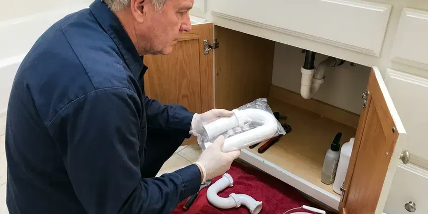

Toilet Replacement in Madison, WI
Dealing with an old or broken toilet in Madison, WI? HKV Plumbing provides quick and clean toilet replacement services for your home.
- Prompt Service
- Workmanship Guarantee
- Licensed Plumbers
- Fair Pricing

Dependable Toilet Replacement Services in Madison, WI.
Many toilet replacements are finished in about two hours with no mess left behind.
Skilled Toilet Replacement Services in Madison, WI
HKV Plumbing specializes in professional toilet replacement, offering a wide range of options to fit your home's style and your budget. Whether your existing toilet is constantly running, cracked, or simply outdated, we provide a clean, efficient removal and installation.
Our expertise includes:
- Removal and disposal of old toilets and tanks
- Residential & Commercial Toilet Replacements
- Careful removal of old toilet units.

Additional Bathroom Plumbing Services in Madison, WI
From toilets to showers, our bathroom plumbing team in Madison, WI repairs, installs, and replaces every fixture with clean, code-compliant work.


Customers
Why Choose HKV Plumbing for Toilet Replacement in Madison, WI?
Our team is dedicated to providing quality service, from helping you select the right toilet to its final, leak-free installation.
- One Visit, Removal, installation, testing and haul-away happen in a one trip.
- Quality Products, We work with trusted toilet brands known for durability and water efficiency, ensuring a lasting replacement.
- Quality Fixtures, We recommend and install durable, water-saving toilet models suited to local homes and water pressure.
Citywide Coverage
From downtown to the suburbs, our team is equipped to handle toilet replacement needs across all neighborhoods in Madison. We strive for prompt service, minimizing inconvenience for our local customers.
Experienced Team
Our plumbing technicians are highly trained and experienced in all aspects of toilet replacement, from precise measurements to proper wax ring sealing and water line connections. They stay updated on the latest toilet technologies and installation best practices.
Safety-First Approach
Safety and code compliance are essential for every toilet replacement we undertake. We make sure all connections are secure, water pressure is appropriate, and the installation follows Wisconsin plumbing regulations, preventing leaks and other hazards.
Trusted Certified Madison Plumbing Services Professionals
At HKV Plumbing, we take pride in providing certified plumbing services throughout Madison, WI. Backed by leading industry credentials, our experienced plumbers combine technical skill with genuine customer care. Whether it is repair, installation, or maintenance, we follow strict safety and quality standards to deliver long-lasting results you can trust.
Call Us Now PHCC Plumbing Contractor Recognition
PHCC Plumbing Contractor Recognition Better Business Bureau (BBB) Accreditation
Better Business Bureau (BBB) Accreditation Angi Certified Pro
Angi Certified Pro ISO 9001 Quality Management Certification
ISO 9001 Quality Management CertificationDependable Toilet Replacement Services in Madison, WI
Water-Saving Toilet Upgrades in Madison, WI
Older toilets are one of the largest indoor water users in a home. WaterSense toilets use 1.28 gallons per flush or less, and dual-flush models add a lighter flush for liquids. We recommend models with high MaP scores so you save water without double flushing. Ask your water provider whether it now offers a toilet rebate.

Rental and Multi-Unit Toilet Replacement in Madison, WI
Landlords and property managers rely on us for durable, low-maintenance toilets in rentals. We can replace several toilets in one visit and standardize on a model with common parts. That cuts down on future service calls and tenant complaints. We schedule access with tenants so units stay usable.
Cracked Toilet Replacement in Madison
Cracks in the tank or bowl can leak slowly or fail all at once. A hairline crack below the waterline is not safely repairable, and epoxy fixes rarely last. We replace the cracked toilet promptly and check the floor for any water damage. If only the tank is cracked and the model is still made, we can sometimes replace the tank alone.
High-Efficiency Toilet (HET) Upgrades in Madison, WI
Upgrade to a High-Efficiency Toilet (HET) with HKV Plumbing and start saving water in your Madison, WI home. These models use far less water per flush, typically 1.28 gallons or less, compared to older 3.5 or 5-gallon models. We can help you select an HET that qualifies for potential rebates and provides strong flushing power, reducing your water bill and environmental impact without giving up performance.
One-Piece Toilet Replacement in Madison, WI
One-piece toilets have no tank-to-bowl joint, which means fewer leak points and easier cleaning. They cost more and weigh more, but many homeowners like the clean look. We install one-piece models from TOTO, Kohler and American Standard. Our team handles the extra weight with care to protect your floors.
Cracked Bowl or Tank Replacement in Madison
A cracked toilet bowl or tank can lead to slow leaks and water damage. HKV Plumbing provides targeted replacement for these specific components in Madison, often a more cost-effective solution than a full toilet replacement if the base and internal mechanisms are still sound. We'll assess the damage, source a compatible replacement part, and install it securely, restoring your toilet's integrity without a complete overhaul.
Toilet Brands We Replace in Madison
Our team at HKV Plumbing is experienced with replacing and installing toilets from all major manufacturers in Madison. This includes popular brands like Kohler, American Standard, Toto, Delta, and Gerber. We can help you choose a new toilet from these trusted names that matches your bathroom's style, fits your budget, and provides reliable performance for years to come.

Comfort-Height Toilet Replacement in Madison
Replacing a standard-height toilet with a comfort-height model raises the seat by about 2 to 3 inches. That small change makes a real difference for seniors and anyone with knee or back issues. We often pair this upgrade with an elongated bowl and soft-close seat. The swap uses the same drain location, so no extra plumbing work is needed.
Toilet Replacement Near Me in Madison, WI
Our plumbers live and work in the Madison area and understand local homes. We arrive on time, protect your bathroom and clean up when we are done. Your new toilet is backed by our workmanship guarantee.
Looking for 'toilet replacement near me' in Madison? HKV Plumbing is your local plumbing expert. We offer prompt and reliable service, making sure that residents throughout Wisconsin have access to professional plumbing solutions whenever they need them. Our team is always ready to answer your call.
HKV Plumbing at a Glance
- Fully licensed plumbing team covering Madison, WI
- Same-day appointments and 24/7 emergency response
- Upfront, flat-rate pricing before work begins
- 4.8-star rated by 448+ Wisconsin customers
Madison Map
Madison Information
- Population
- 280,305
- Area codes
- 608/920/262
- Service area
- Madison and communities within 40 miles
- Nearby
- Janesville, Waukesha, Wauwatosa, West Allis
Glacial soils in Wisconsin range from heavy clay to sand and gravel, which affects how water moves around foundations and buried lines. A correctly sealed and installed toilet is crucial to prevent leaks that can lead to costly floor and foundation issues for homes in Madison, WI.
Expert Services
Trust our professionals for reliable HKV Plumbing solutions in Madison, WI.
Our Specialized Plumbing Services in Madison, WI
At HKV Plumbing, we provide a complete range of plumbing services across Madison, WI. From leak detection to full system installations, our team ensures fast, precise, and affordable service for both residential and commercial properties. Explore our core services below:


How Our Toilet Replacement Process Works in Madison, WI
Replacing a toilet with us takes three simple steps and typically a single visit.
Request a Quote
Contact us at (414) 432-4641 to discuss your toilet replacement needs. We'll schedule a good time for a technician to assess your situation and provide an honest estimate.
Old Toilet Removal
Our team will carefully shut off the water, disconnect the old toilet, and remove it from your bathroom. We take care to protect your flooring and dispose of the old unit responsibly.
New Toilet Installation
We will install your new toilet, ensuring a solid seal with a new wax ring, secure bolt connections, and proper water supply line hookup. We test for leaks and verify strong flushing.
Frequently Asked Questions About Toilet Replacement in Madison
The cost of toilet replacement in Madison, WI typically ranges from $400 to $800, including the new toilet fixture and labor. This can vary based on the toilet model you choose, any necessary repairs to the flange or subfloor, and the complexity of the installation.
Older toilets can use 3.5 to 7 gallons per flush, while WaterSense toilets use 1.28 gallons or less. For a typical household, that can mean thousands of gallons saved each year.
In most residential cases, replacing an existing toilet with a new one of similar type does not require a plumbing permit in Madison. However, if the replacement involves altering the drain lines or significant structural changes, a permit might be necessary. We can advise you on specific requirements.
Frequent clogs, cracks in the porcelain, constant repairs, rocking that returns after resetting and very high water use are common signs. Toilets more than 25 years old are often good candidates for replacement.
Absolutely. Modern toilets are designed for water efficiency. Look for High-Efficiency Toilets (HETs) that use 1.28 gallons per flush (GPF) or less, or dual-flush models that offer a lower volume flush for liquid waste and a higher volume flush for solid waste. These can significantly reduce your water consumption.
HKV Plumbing provides a warranty on both our workmanship and the installed toilet fixture. The specific terms vary by toilet brand, but we stand behind our installations to protect your peace of mind regarding leaks or malfunctions.
While it is possible to DIY a toilet replacement, we highly recommend hiring a professional. Improper installation can lead to leaks, water damage, and costly repairs. Our plumbers make sure of correct sealing, proper flange connection, and adherence to all plumbing codes.
We often recommend and install reliable brands like American Standard, Kohler, Toto, and Delta. These brands offer a range of durable, water-efficient models that perform well across a wide range of water conditions and are known for their long service life.
What People Are Saying About Our Plumbing Experts?

Patricia H.
We had a slab leak that two other companies could not find. HKV Plumbing located it in under an hour, explained our options, and the price matched the quote to the dollar.
Slab Leak Repair · Wauwatosa, WI
James P.
Our commercial plumbing system had a leak under the sink, and HKV Plumbing handled it professionally. The plumbers arrived quickly and restored everything without disruption to our customers.
Commercial Plumbing · Waukesha, WI
Laura S.
I scheduled a water heater replacement, and the team made the process smooth and affordable. The new unit works perfectly, and they cleaned up after completing the job.
Water Heater Replacement · Oshkosh, WISofia M.
Two new toilets installed in one visit, no mess left behind, and the tech even adjusted a faucet he noticed was dripping. Fair pricing and really friendly.
Toilet Installation · Oshkosh, WIRobert G.
The trenchless sewer replacement saved our front yard. They walked us through the camera inspection footage first so we knew exactly what we were paying for.
Sewer Line Replacement · Janesville, WI
Mark T.
When our office needed drain cleaning, HKV Plumbing provided quick, reliable service. The plumber arrived on time and made sure every drain flowed perfectly before leaving. Very satisfied.
Drain Cleaning · Wauwatosa, WI